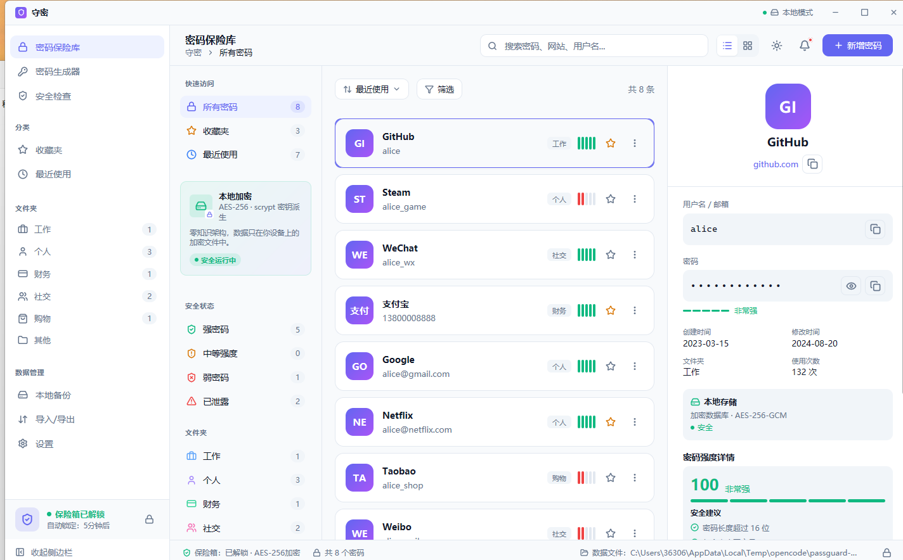

现代加密
scrypt 派生 256 位密钥，AES-256-GCM 认证加密。文件被改动一个字节，就会立刻被发现。
Windows 10 / 11 · 原生界面 · 完全离线
守密 PassGuard 是一款完全离线的 Windows 密码管理器。原生界面、现代加密、没有云端账户——主密码只在你自己的设备上验证。

功能
从生成、保存到安全检查，日常需要的功能都在一个安静的窗口里。
scrypt 派生 256 位密钥，AES-256-GCM 认证加密。文件被改动一个字节，就会立刻被发现。
没有账号、没有云同步、没有遥测。密码只写入本机的 vault.bin，不向任何服务器发送。
界面由 Go 直接绘制，不加载 WebView。启动快、占用低，列表滚动和弹窗都没有网页的迟滞感。
随机密码、易记短语和 PIN 三种模式，实时强度评分、破解时间估算与生成历史。
自动找出弱密码、重复密码、已泄露和已过期条目，按优先级给出修复建议。
一键加密备份、自动备份间隔与保留策略；支持加密 .bin 和 CSV 导入导出。
空闲自动锁定，锁定时可清理剪贴板；关闭窗口收进托盘，单实例运行不打扰。
托盘菜单、系统通知、Windows Hello 与 Windows 凭据管理器保存解锁密钥，启动即可进入。
沿用 Electron 版的目录与 vault.bin 文件格式，原有主密码可以直接打开旧保险库。
界面
原生控件、系统字体、跟随设置的深浅色。下面是应用里的真实截图。
保险库：搜索、文件夹、强度与收藏一目了然，右侧直接查看详情。
安全
没有“上传后加密”的中间环节。你的保险库从第一字节起就是密文。
// %APPDATA%\PassGuard\PasswordVault\vault.bin
{
"version": 1,
"kdf": {
"algo": "scrypt",
"N": 65536, "r": 8, "p": 1,
"keylen": 32,
"salt": "随机盐"
},
"verifier": { "iv": "…", "tag": "…", "data": "…" },
"vault": { "iv": "…", "tag": "…", "data": "…" }
}真实密码只存在于 vault 的密文里。
常见问题
还有别的问题？在 GitHub 上开一个 issue。
保险库是 %APPDATA%\PassGuard\PasswordVault\vault.bin，一个加密文件；备份在 %APPDATA%\PassGuard\Backups\。整个目录可以复制到别的电脑，用同一个主密码打开。
不能。守密没有云端、没有后门，也没有可以重置主密码的服务器——这正是它保护你的方式。请务必记牢主密码，或把它保存在另一个可靠的地方。
没有账号、云同步和遥测。密码、用户名和保险库内容不会离开本机，也不会发送到任何服务器。
兼容。两者使用相同的目录和 vault.bin 文件格式，原有主密码可直接打开。首次运行需要手动输入一次主密码；之后可由 Windows 凭据管理器保存自动解锁密钥。
Windows 10（1809 及以上）与 Windows 11，64 位。不支持 Windows 7；原 Electron 版本同样如此。
使用内置的“本地备份”创建加密备份，或用“导入/导出”生成加密 .bin 或 CSV。备份文件同样受主密码保护，可以放到 U 盘或另一台电脑。